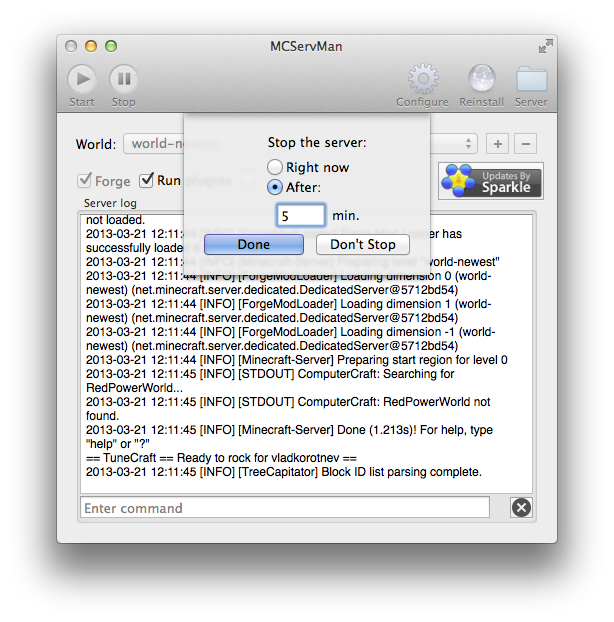
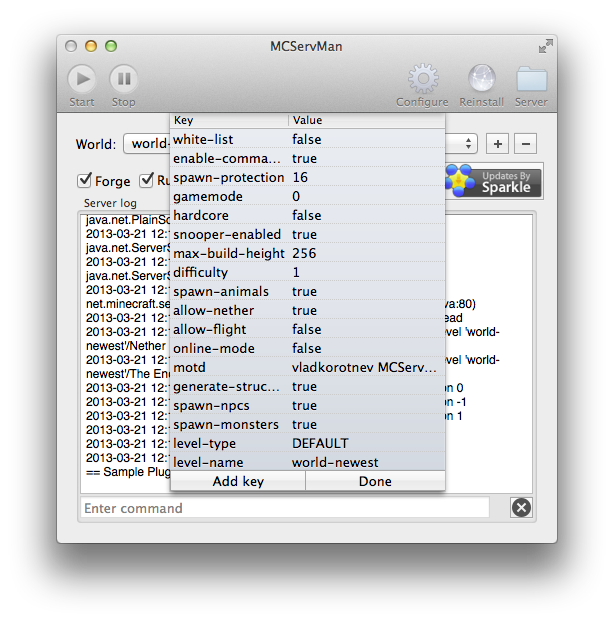

Timed server stop. Stop your server on time.
If you have to turn off your server, but there are still people playing, set up a timer. It will even post a notification time-to-time so the clients will know.

Extensible and flexible. Simple yet powerful plugin architecture.
Control iTunes on the server. Kick cheaters and griefers automatically. Schedule gamemodes. Write your own plugins.*

GUI configuration editor. No more typos in your config.
Double-click to edit an existing key, or press 'Add' to add a new one. Help text in the Add window was nicely provided by MinecraftWiki.

Want it? Then get it.
Requires Mac OS X 10.6+ and Java. Tested only on Mac OS X 10.8.
1GB+ of RAM recommended.